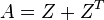
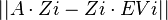
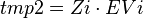
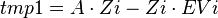
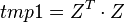
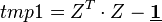

ELPA
From ESL
Source authors:
ELPA Consortium (external homepage)
Responsible for the ESL entry:
J. Kloppenburg (wiki user page)
License: LGPL
Type of development: External
Download: download tar.gz here]
ELPA: Eigenvalue SoLver for Petaflop Applications
ELPA is a Fortran-based high-performance computational library for the massively parallel solution of symmetric or Hermitian, standard or generalized eigenvalue problems.
On a single core there are standard libraries available that implement the usual mathematical way to solve the problem numerically. For massively parallel supercomputer applications this problem is non-trivial because of the neccassary communication involved. The ELPA library was developed to improve performance of already existing implementations which are available in scalapack which is also distributed by the netlib website that provides lapack among many other numerical libraries.
The original ELPA Library was created by the ELPA consortium, a collaborative effort supported by the German Federal Ministry of Education and Research BMBF, grant number 01IH08007.
Publications
The latest publication concerning ELPA can be found here [1].
Prerequisites
The lapack and scalapack libraries from the netlib website are a minimal requirement. If you decide to use the Intel compilers you do not need an extra lapack+scalapack library since the Intel MKL is included in the usual distribution from Intel. Make sure to install the MKL scalapack librarires by selecting the 'cluster tools' option during the installation of Intel compilers since they are no longer installed automatically with versions 14+.
Installation
1) GCC:
a) Get the lapack and scalapack packages from netlib and install them into $YOUR_DIRECTORY. b) In the console where you intend to build ELPA, enter export LIBS='-L$YOUR_DIRECTORY -lscalapack -llapack -lblas' and <Enter> it. c) Extract ELPA archive, a subdirectory containing the files will be created. d) Do ./configure --help and READ the options about kernels to build with ELPA, this choice will not be made for you, the most general choice is the generic kernel but there are also assembler code versions available for SSE, AVX and BG architectures. e) ./configure --prefix=<INSTALL_DIR> --kernel_of_choice --disable-shared f) make && make install g) For the linking of your program to use ELPA, remember to add the linking flags. The most easy way would be to add the library specification '-L<INSTALL_DIR> -lelpa' to the final link line of your program source code build architecture.
2) Intel:
a) Extract ELPA archive, a subdirectory containing the files will be created. b) Do ./configure --help and READ the options about kernels to build with ELPA, this choice will not be made for you, the most general choice is the generic kernel but there are also assembler code versions available for SSE, AVX and BG architectures. c) ./configure --prefix=<INSTALL_DIR> --kernel_of_choice d) make && make install e) For the linking of your program to use ELPA, remember to add the linking flags. The most easy way would be to add the library specification '-L<INSTALL_DIR> -lelpa' to the final link line of your program source code build architecture.
Testing
With the usual installation of ELPA there will be small testing programs installed. They are called test_complex, test_complex2, test_real and test_real2, named by thier functionality. ELPA has a one-stage and a two-stage functionality and real and complex variable inputs/outputs and so the program names reflect the test to be run.
One of these will be used here for illustrative purposes. The original file in the distribution contains some more functionality that has been removed here because it it not needed for demonstration purposes.
program test_real2 use ELPA1 use ELPA2
We define the name of the program and include the two ELPA libraries.
implicit none include 'mpif.h'
Make sure variable name typos are recognized as such and include the mpi fortran header which ELPA needs to set default values.
integer :: nblk integer na, nev integer np_rows, np_cols, na_rows, na_cols integer myid, nprocs, my_prow, my_pcol, mpi_comm_rows, mpi_comm_cols integer i, mpierr, my_blacs_ctxt, sc_desc(9), info, nprow, npcol integer, external :: numroc real*8 err, errmax real*8, allocatable :: a(:,:), z(:,:), tmp1(:,:), tmp2(:,:), as(:,:), ev(:) integer :: iseed(4096) ! Random seed, size should be sufficient for every generator integer :: STATUS
These are variable declarations as usually expected in source code.
#ifdef WITH_OPENMP integer :: omp_get_max_threads, required_mpi_thread_level, provided_mpi_thread_level #endif
Add some more variables in case we use openmp.
nblk = 16 na = 4000 nev = 1500
Set standard values for the scalapack block distribution (nblk), the matrix size (na) and the number of eigenvectors of interest (nev).
#ifndef WITH_OPENMP call mpi_init(mpierr) #else required_mpi_thread_level = MPI_THREAD_MULTIPLE call mpi_init_thread(required_mpi_thread_level, provided_mpi_thread_level, mpierr) if (required_mpi_thread_level .ne. provided_mpi_thread_level) then print *,"MPI ERROR: MPI_THREAD_MULTIPLE is not provided on this system ", provided_mpi_thread_level," is available" call EXIT(1) stop endif #endif
More hooks for sanity checks to confirm we use either MPI or OpenMP.
call mpi_comm_rank(mpi_comm_world,myid,mpierr) call mpi_comm_size(mpi_comm_world,nprocs,mpierr)
Initialize the MPI communicators.
STATUS = 0 #ifdef WITH_OPENMP if (myid .eq. 0) print *,"Threaded version of test program, using ",omp_get_max_threads()," threads" #endif
Output for OpemMP thread number in case we use it.
do np_cols = NINT(SQRT(REAL(nprocs))),2,-1 if(mod(nprocs,np_cols) == 0 ) exit enddo
Selection of number of processor rows/columns. We try to set up the grid square-like, i.e. start the search for possible divisors of nprocs with a number next to the square root of nprocs and decrement it until a divisor is found. At the end of the above loop, nprocs is always divisible by np_cols.
np_rows = nprocs/np_cols
Determine the number of processor rows.
if(myid==0) then print '(a)','Standard eigenvalue problem - REAL version' print '(3(a,i0))','Matrix size=',na,', Number of eigenvectors=',nev,', Block size=',nblk print '(3(a,i0))','Number of processor rows=',np_rows,', cols=',np_cols,', total=',nprocs endif
Let the master CPU state what has just been set up.
my_blacs_ctxt = mpi_comm_world call BLACS_Gridinit( my_blacs_ctxt, 'C', np_rows, np_cols ) call BLACS_Gridinfo( my_blacs_ctxt, nprow, npcol, my_prow, my_pcol )
Set up BLACS context and MPI communicators. The BLACS context is only necessary for using Scalapack. For ELPA, the MPI communicators along rows/cols are sufficient, and the grid setup may be done in an arbitrary way as long as it is consistent (i.e. 0<=my_prow<np_rows, 0<=my_pcol<np_cols and every process has a unique (my_prow,my_pcol) pair).
call get_elpa_row_col_comms(mpi_comm_world, my_prow, my_pcol, mpi_comm_rows, mpi_comm_cols)
All ELPA routines need MPI communicators for communicating within rows or columns of processes, these are set in get_elpa_row_col_comms.
na_rows = numroc(na, nblk, my_prow, 0, np_rows) na_cols = numroc(na, nblk, my_pcol, 0, np_cols)
Determine the necessary size of the distributed matrices, we use the Scalapack tools routine NUMROC for that.
call descinit( sc_desc, na, na, nblk, nblk, 0, 0, my_blacs_ctxt, na_rows, info )
Set up a scalapack descriptor for the checks to be performed. For ELPA the following restrictions hold: The block sizes in both directions must be identical (args 4+5 (nblk)) and the first row and column of the distributed matrix must be on row/col 0/0 (args 6+7)
allocate(a (na_rows,na_cols)) allocate(z (na_rows,na_cols)) allocate(as(na_rows,na_cols)) allocate(ev(na)) iseed(:) = myid call RANDOM_SEED(put=iseed) call RANDOM_NUMBER(z) a(:,:) = z(:,:) call pdtran(na, na, 1.d0, z, 1, 1, sc_desc, 1.d0, a, 1, 1, sc_desc) ! A = A + Z**T if (myid==0) then print '(a)','| Random matrix has been symmetrized.' end if
Allocate matrices and set up a test matrix for the eigenvalue problem. For getting a symmetric test matrix A we get a random matrix Z and calculate . We want different random numbers on every process (otherways A might get rank deficient):
as = aSave original matrix A for later accuracy checks
if (myid==0) print '(a)','| Calling two-stage ELPA solver ... ' call solve_evp_real_2stage(na, nev, a, na_rows, ev, z, na_rows, nblk, mpi_comm_rows, mpi_comm_cols, mpi_comm_world)
Calculate eigenvalues/eigenvectors with ELPA and test correctness of result using scalapack routines.
deallocate(a) allocate(tmp1(na_rows,na_cols)) call pdgemm('N','N',na,nev,na,1.d0,as,1,1,sc_desc,z,1,1,sc_desc,0.d0,tmp1,1,1,sc_desc)
1. Residual (maximum of  ) and tmp1 = computed with scalapacks parallel dgemm.
deallocate(as) allocate(tmp2(na_rows,na_cols)) tmp2(:,:) = z(:,:) do i=1,nev call pdscal(na,ev(i),tmp2,1,i,sc_desc,1) enddo tmp1(:,:) = tmp1(:,:) - tmp2(:,:)
Compute  and  as needed for testing.
errmax = 0 do i=1,nev err = 0 call pdnrm2(na,err,tmp1,1,i,sc_desc,1) errmax = max(errmax, err) enddo
Get maximum norm of columns of tmp1
err = errmax call mpi_allreduce(err,errmax,1,MPI_REAL8,MPI_MAX,MPI_COMM_WORLD,mpierr) if(myid==0) print *,'Error Residual :',errmax if (errmax .gt. 5e-12) then status = 1 endif
Get maximum error norm over all processors and check if errors are below reasonable threshold.
tmp1 = 0 call pdgemm('T','N',nev,nev,na,1.d0,z,1,1,sc_desc,z,1,1,sc_desc,0.d0,tmp1,1,1,sc_desc)
2. Eigenvector orthogonality as in 
tmp2 = 0 call pdlaset('A',nev,nev,0.d0,1.d0,tmp2,1,1,sc_desc)
Initialize tmp2 to unit matrix.
tmp1(:,:) = tmp1(:,:) - tmp2(:,:) err = maxval(abs(tmp1)) call mpi_allreduce(err,errmax,1,MPI_REAL8,MPI_MAX,MPI_COMM_WORLD,mpierr) if(myid==0) print *,'Error Orthogonality:',errmax if (errmax .gt. 5e-12) then status = 1 endif
Compute  resulting in the Residual Error Matrix. Each element of the resulting matrix is checked to be below the threshold of 5E-12.
deallocate(z) deallocate(tmp1) deallocate(tmp2) deallocate(ev) call blacs_gridexit(my_blacs_ctxt) call mpi_finalize(mpierr) call EXIT(STATUS) end program
Final cleanup and termination statement to please the compiler.
Interface descriptions
The basic interface to ELPA has been shown above and it is very similar to the ones used in standard scalapack routines. For a more detailed view of the available interfaces of ELPA go to the official documentation page of the ELPA creators at Rechenzentrum Garching in Germany. There is a detailed documentation with all neccessary information provided.
References
- ↑ Andreas Marek, Volker Blum, Rainer Johanni, Ville Havu, Bruno Lang, Thomas Auckenthaler, Alexander Heinecke, Hans-Joachim Bungartz, and Hermann Lederer: "The ELPA Library - Scalable Parallel Eigenvalue Solutions for Electronic Structure Theory and Computational Science" The Journal of Physics: Condensed Matter 26, 213102 (2014). [1]